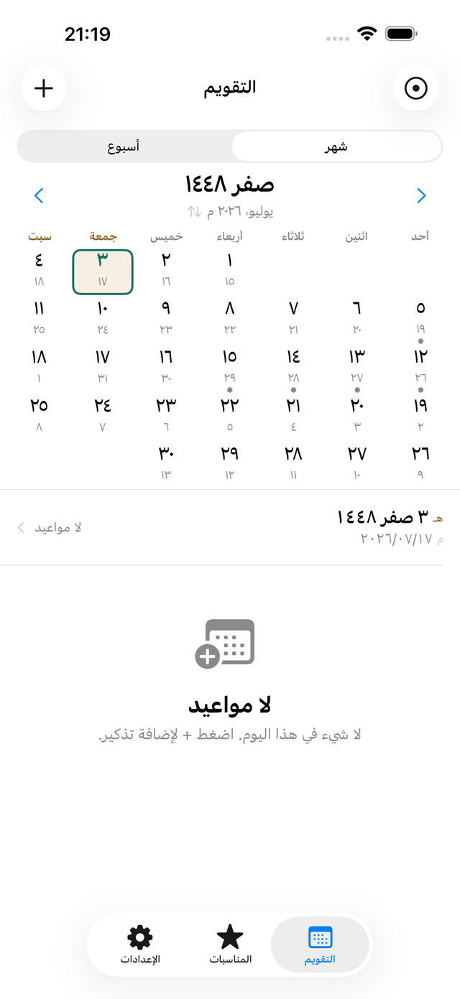
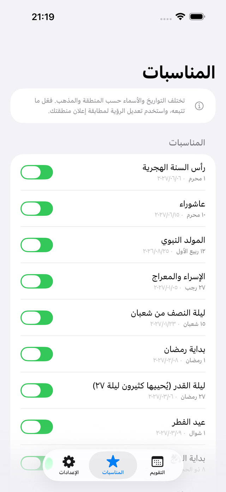
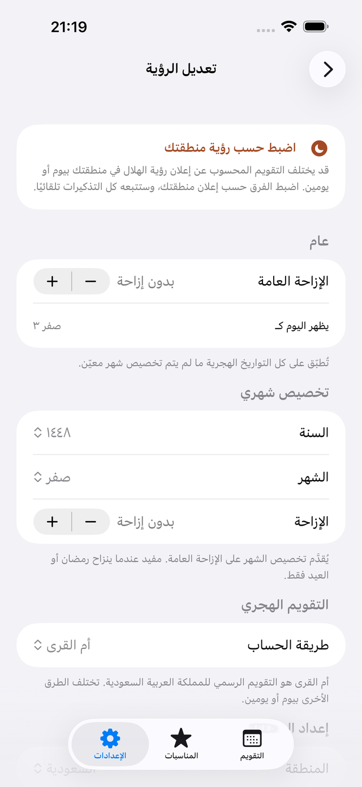

يضع قمري التاريخ الهجري في المقام الأول، مع التاريخ الميلادي دائمًا بجانبه.
التكرار بالتقويم الهجري، وتنبيهات تتبع رؤية منطقتك — وهما ما لا يستطيعه التقويم العادي.



آيفون / iOS 26.0 أو أحدث · العربية / English / 日本語 · بدون حساب
في العرض الشهري والأسبوعي، التاريخ الهجري هو الأساس. ويبقى الميلادي أسفله، فلا تتعثر حين تنسّق مواعيدك مع الآخرين.
اضغط على رأس الشهر فيتبادل التقويمان موضعيهما. اجعل الميلادي في المقدمة حين تحتاج، ثم عُد.
اختر الأرقام العربية (٤٥٦) أو اللاتينية. وتتبع بداية الأسبوع (السبت أو الأحد) وعطلة نهاية الأسبوع (الجمعة-السبت أو السبت-الأحد) إعداد منطقتك، ويمكن تغييرها.
السنة القمرية أقصر من الميلادية بنحو ١١ يومًا، ولذلك تتقدم المناسبة الهجرية في السنة الميلادية كل عام. وضبط «سنويًا» في تقويم ميلادي ليس هو «سنويًا» في التقويم الهجري.
اليوم والشهر الهجريان نفسهما، يعودان مرة واحدة تمامًا كل سنة. التاريخ الميلادي يتغير كل عام، أما إعدادك فلا.
كرّر في اليوم الهجري نفسه من كل شهر، أو في تاريخ محدد مثل ١ رمضان. والتكرار الأسبوعي مدعوم أيضًا.
أثناء إنشاء الموعد، تعرض المعاينة التواريخ الميلادية التي سيقع فيها. فيُجاب سؤال «متى رمضان القادم؟» في الحال.
قد يختلف التقويم المحسوب عن إعلان رؤية الهلال في منطقتك بيوم أو يومين. وتعديل كل موعد محفوظ يدويًا في كل مرة ليس أمرًا عمليًا.
اضبط من -٢ إلى +٢ يوم حسب إعلان منطقتك، فيتبع ذلك التقويمُ وتواريخ كل تذكير محفوظ تلقائيًا. لا شيء تصلحه بيدك.
حين يتغير رمضان أو العيد وحدهما، خصّص ذلك الشهر. والتخصيص الشهري له الأولوية على الإزاحة العامة.
بدّل بين أم القرى (الافتراضي، والتقويم الرسمي في السعودية) والمدني والجدولي.
لا يدّعي قمري أن تاريخًا ما هو الصحيح. واختيار الإعلان الذي تتبعه قرارك أنت دائمًا.
تختلف التواريخ والأسماء حسب المنطقة والمذهب. ولذلك لا يفعّل قمري المناسبات بشكل جماعي. افتح القائمة وفعّل ما تتبعه أنت فقط. ولا يُقدَّم أي ترجيح إطلاقًا.
رأس السنة الهجرية، وعاشوراء، والعيدان، وبداية رمضان وغيرها. ولا يظهر في تقويمك وتنبيهاتك إلا ما فعّلته.
الأيام البيض (١٣ و١٤ و١٥ من كل شهر هجري) مجانية. وتضيف النسخة الكاملة الاثنين والخميس، وستة أيام في شوال.
اعرض كم سنة هجرية مضت على مناسباتك — وهو رقم يختلف عن العدّ الميلادي.
يضيف الإصدار 1.1 محوّل التاريخ. حوّل بين الهجري والميلادي في الاتجاهين، واحسب عدد الأيام بين تاريخين، والعمر بالسنوات القمرية. وانسخ التاريخين معًا. وهو مجاني.
اختر التقويم الذي تُدخل به، ويُحسب الآخر تلقائيًا. وإذا ضبطت تعديل الرؤية، تتبعه النتيجة أيضًا.
عدد الأيام بين تاريخين، والسنوات القمرية المنقضية، والأيام حتى الذكرى القمرية القادمة.
يُرسم من اليوم الهجري المعروض. وإذا أزحت التاريخ بتعديل الرؤية، يتحرك الطور معه.
على الشاشة العريضة يظهر التقويم ومواعيدك جنبًا إلى جنب. البيانات نفسها على الجهازين.
المناسبات متعددة الأيام مثل العيد وأيام التشريق تظهر على امتداد مدتها، لا في يومها الأول فقط.
دول مجلس التعاون الست إضافة إلى مصر والأردن والعراق وتركيا وماليزيا وإندونيسيا وباكستان. ويمكن تغيير أول أيام الأسبوع وأيام العطلة (الجمعة-السبت أو السبت-الأحد أو الجمعة فقط) من الإعدادات.
اختر وقت التذكيرات. وتتيح النسخة الكاملة تعيين وقت مختلف لتذكير بعينه.
حوّل تاريخًا أو مناسبة إلى بطاقة صورة. الرسم والمشاركة يتمّان على جهازك.
اسأل Siri أو Spotlight أو تطبيق الاختصارات أو ساعة Apple عن تاريخ اليوم الهجري أو المناسبة القادمة.
يعمل قمري بالكامل دون اتصال. لا حساب تنشئه. مواعيدك وإعدادات مناسباتك وتعديلات الرؤية محفوظة على جهازك ولا مكان سواه. ولا يُرسل شيء إلى خادم المطوّر — إذ لا وجود له أصلًا. التنبيهات محلية، وكل الميزات تعمل في وضع الطيران.
بدون إعلانات. بدون تتبّع. خصوصية التطبيق: لا يتم جمع البيانات.
| الميزة | مجاني | الكاملة |
|---|---|---|
| عرض التقويمين | الكل | ✓ |
| المناسبات الإسلامية | هذه السنة | كل سنة |
| التذكيرات الهجرية | حتى ٣ | بلا حدود |
| تعديل الرؤية | عام | لكل شهر |
| إعدادات أيام الصيام | الأيام البيض | الكل |
| الأدوات | — | ✓ |
| التصدير / مزامنة التقويم | — | ✓ |
| الكتابة بلغتك | — | ✓ |
| وقت التذكير | وقت واحد للكل | لكل تذكير |
| عدّ رمضان وملاحظات المناسبات | — | ✓ |
| الاختصارات وساعة Apple | — | ✓ |
النسخة الكاملة شراء لمرة واحدة، وليست اشتراكًا. ويمكنك استعادتها في أي وقت.
أمران. الأول أنه يمكنك إنشاء مواعيد تتكرر كل سنة هجرية. السنة القمرية تتقدم نحو ١١ يومًا كل سنة في التقويم الميلادي، ولذلك لا يستطيع التقويم الميلادي التعبير عنها. والثاني تعديل الرؤية: عدّل التواريخ لتطابق إعلان منطقتك، فتتبعه تلقائيًا كل التذكيرات التي حفظتها من قبل.
استخدم تعديل الرؤية. تغطي الإزاحة العامة من -٢ إلى +٢ يوم، ومع النسخة الكاملة يمكنك تخصيص شهر بعينه. التعديل يحدّث عرض التقويم وتواريخ كل تذكير محفوظ.
أم القرى (الافتراضي) والمدني والجدولي، ويمكن التبديل بينها من الإعدادات. تقويم أم القرى هو التقويم الرسمي في المملكة العربية السعودية. وقد تختلف الطرق بيوم أو يومين.
على جهازك فقط. لا يوجد حساب، ولا يُرسل أي شيء إلى أي مكان، ولا توجد إعلانات ولا تتبّع. وكل الميزات تعمل في وضع الطيران.
يسمح iOS للتطبيق بجدولة ٦٤ تنبيهًا معلّقًا في وقت واحد. يُبقي قمري أقرب ٥٠ تنبيهًا مجدولة، ويعيد ملأها كلما وصلت التنبيهات وكلما فتحت التطبيق. ولا حد لعدد المواعيد نفسها (النسخة الكاملة).
لا. النسخة الكاملة شراء لمرة واحدة. اشترِها مرة ولا شيء بعدها. ويمكنك استعادتها من الإعدادات أو من صفحة الشراء.
لا. قمري يدير التواريخ فقط. ولأن التواريخ والأسماء تختلف حسب المنطقة والمذهب، فأنت من يختار المناسبات التي يتبعها. ولا يدّعي التطبيق أن تاريخًا ما هو الصحيح، والقرارات الشرعية متروكة لك وللجهات التي تتبعها.